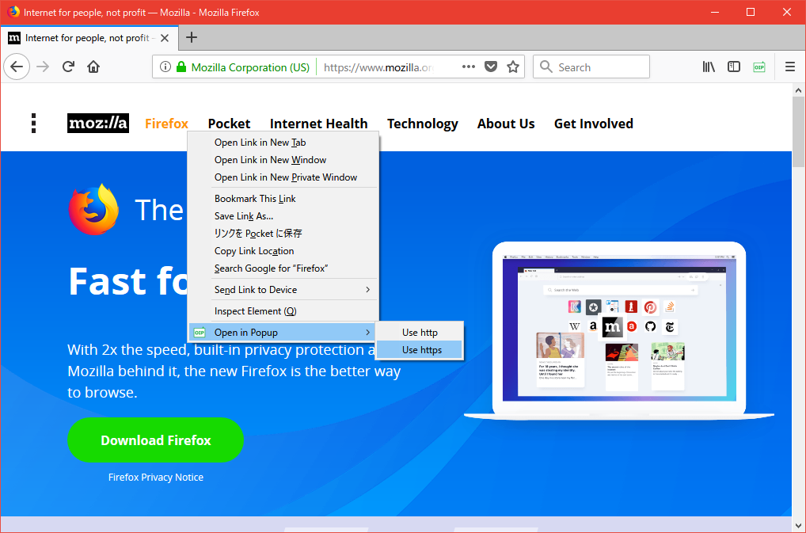
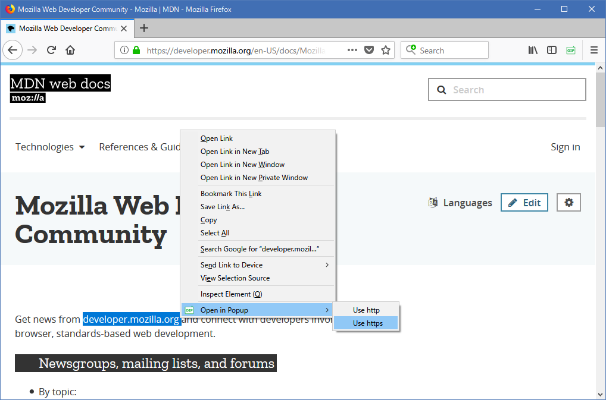
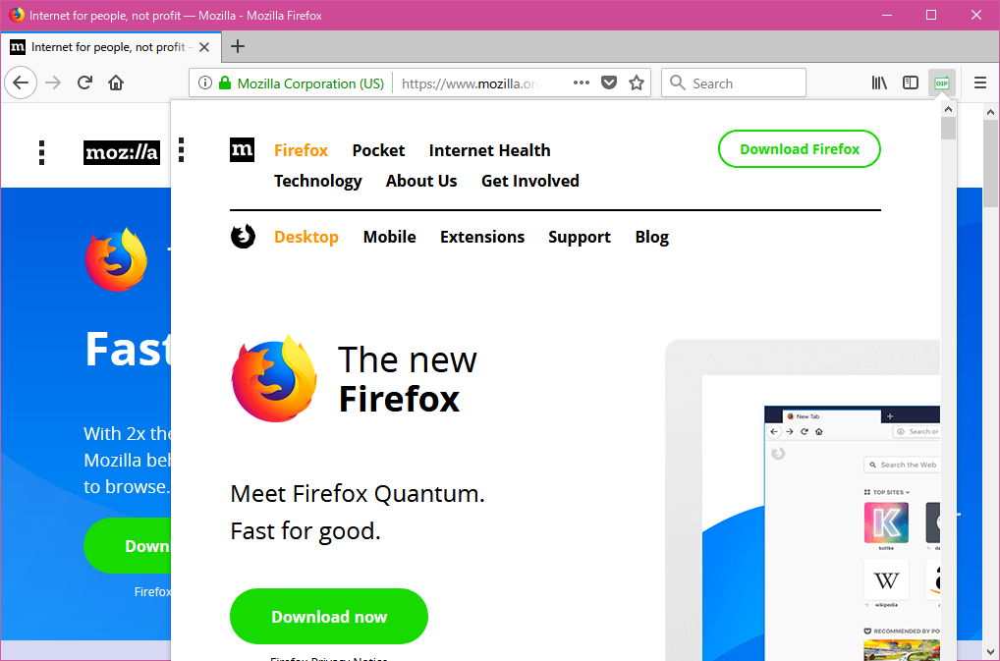
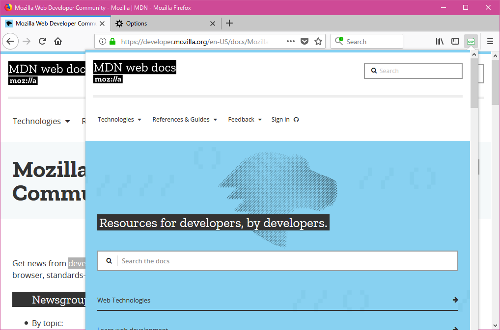

Open in Popup - Tutorial

1.Right click a link or right click selected characters, then choose "Open in Popup".


2.Choose the type what you want to open and open the link(choose https if you are not sure).


Caution: In case of selecting url which has https, https will be used even if you select http.